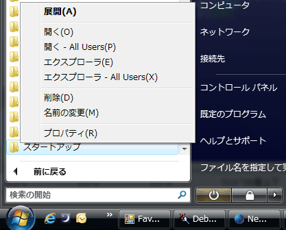
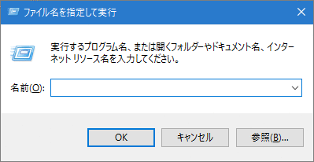

- スタートアップフォルダってなんですか？ いろいろ探したんですが、スタートアップフォルダがどこにあるかさえ、わかりません。

「スタートアップフォルダ」はWindowsが起動した時に、自動的に動くプログラムへのショートカットを入れておくフォルダのことです。 秀丸エディタでは、常駐秀丸を使用するときに、秀丸エディタのショートカットを「スタートアップフォルダ」に作成します。
スタートアップフォルダは、次の手順でひらきます。
Windows Vistaの場合
- スタートメニューを開き「すべてのプログラム」を選ぶ。
「スタートアップ」を探し、右クリックメニューで「開く」を選択。

スタートアップフォルダが開きます。
Windows 7/8/10 の場合
Windowsキー + Rキー を押し、「ファイル名を指定して実行」を表示させます。
「shell::startup」と入力し、「OK」を押せば、スタートアップフォルダが開きます。